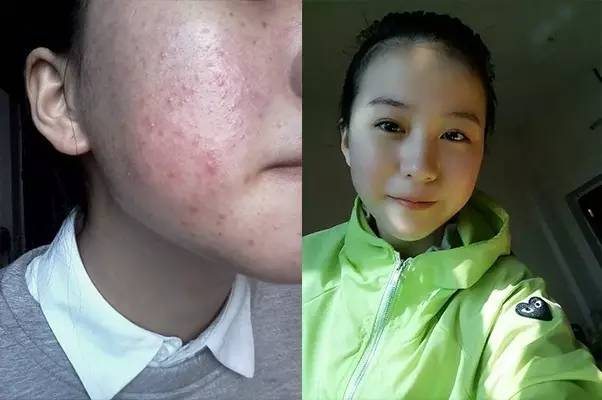
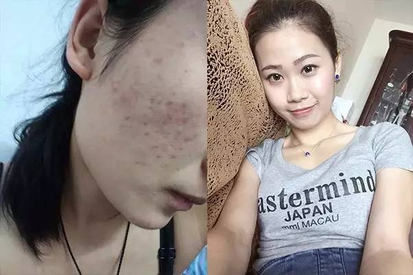
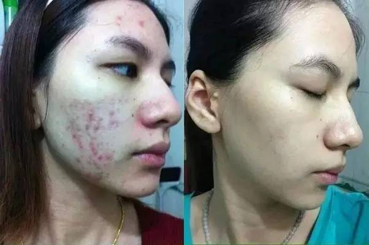
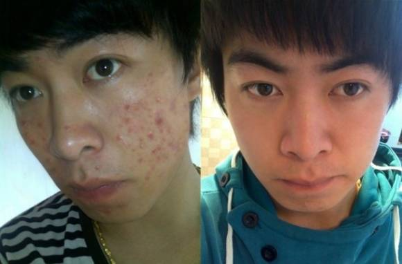
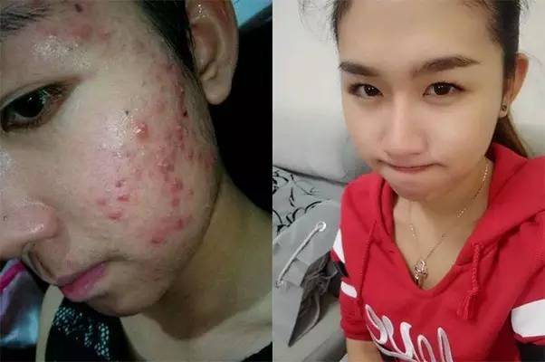

鲜为人知的战痘神器 让你的皮肤比现在好上100倍！
嘿！你脸上的痘痘还好吗？上次用的祛痘产品有帮你根除掉恼人的痘痘吗？没有？那你该往下看看了！
陈佳敏（国家认证美容导师）说：毛孔堵塞是诱发痘痘的根本原因，所以要想根治痘痘，就必须保持毛孔的畅通。堵塞的毛孔，就好像是“堵车”，不去疏通道路，只会越堵越多。一旦毛孔堵塞，油脂与水分无法平衡时，就会造成内部缺水，这时如果只注重表面清除油光，没有真正解肌肤的的“渴”，想要彻底告别痘痘、清除油光是难以实现的，长久以往，就会造成皮肤“外油内干，痘痘横生”。
那么，要怎样才能去掉痘痘，恢复颜值呢？添加陈佳敏微信号：（←长按可复制），手把手教你正确护理自己的皮肤，给你鲜为人知的战痘神器，让你的皮肤比现在好上100倍！
下面分享几个在陈佳敏的帮助下成功战痘的案列：
铲除8年的痘痘，不费时、不费力！
张晓云 痘龄：8年
长痘原因：大油田、油脂分泌不平衡导致长痘
痘痘类型：闭合性粉刺
祛痘时长：35天

在遇上陈佳敏之前，我是一个回头率百分之两百的人，走到哪里都是众人目光焦点的菇凉，造成这种现象的结果只有一个：我有着一脸悚人的痘痘！曾经因为这布满我整张脸的痘痘，我生活自闭、工作自卑、甚至连找对象都成了一个大问题。
在过去的整整8年的痘期里，为了祛痘，我走过很多弯路，看过中医喝过中产品，用过偏方试过护肤品，用一句曾经很火的网络语言来为我的“战痘”历程做一个总结就是，“然而，并没有什么卵用！”
再多的努力付诸于自己的脸上，都是得到“竹篮打水一场空”的结果，最后我“赔了夫人又折兵”，伤钱还不要紧，重要的是还伤身，因为脸上用多了各种杂七杂八的祛痘产品，导致自己脸上的皮肤最后变成了“敏感肌”！
从此之后，再用一些带有一点刺激性的护肤品的时候，脸就开始发红发痒，严重的时候脸还会肿起来。即便自己生活已经够悲惨了，可痘痘依旧不断火上浇油，一拨一拨地继续爆发。终于，我的脸有救了是一个朋友介绍了陈佳敏给我认识，加了陈佳敏的微信之后，她很热情地询问我的皮肤情况，并给我仔细分析了长痘痘的各种原因，最后还帮我做了一个皮肤检测。
因为自己的“敏感肌”已经经不起任何的折腾，陈佳敏针对我的皮肤特性，帮我定制了一套特殊疗法，最后花了一个月零5天就把脸上的痘痘都去掉了，现在每天都是美美哒，男票也自己找上门了，哈哈~。
长按下方V信号复制并添加为好友
痘痘“遗留问题”解决了，颜值回归
李丽 痘龄：2年多
长痘原因：青春期雄激素分泌旺盛导致长痘
痘痘类型：痘印、痘坑
祛痘时长：22天

我是14年开始长痘痘的，刚开始的时候痘痘长得不算多，后来反而被我用各种淘宝来的产品膏越弄越严重，痘痘就开始猛地长了。到了15年的年初的时候，脸上的痘痘就开始大爆发，妈妈没办法就带我去看了医生，当时医生给我开了西产品，西产品吃了以后又吃中产品...一番忙碌下来，痘痘可以说是没有了，单难看的红黑交错的痘印却留了下来，这又成为了我心头的一大痛。
在今年5月份的时候，同学介绍了陈佳敏给我认识，听说她可以帮我去掉这烦人的痘印、痘坑，我便怀着十二分的热情加了她的微信和她聊了起来。当时陈佳敏看了我脸上的痘痘之后，说我的痘疤情况比较严重，需要的是针对性的叮嘱我先不要用自己淘来的祛痘产品了，用上一些纯植物提取、特性温和的产品才能真正把脸上的痘疤根除掉。
为了能够去掉这些痘痘遗留问题，我像个小学生一样每天遵嘱陈佳敏的建议进行皮肤护理，为了变美，我那段时间连自己最爱的欧巴都放一边去了，每天坚持十一点不到就爬到床上数羊。最后，用陈佳敏推荐的产品加上自己的生活好习惯，我只花了不到一个月的时间，就把痘痘遗留问题彻底解决掉了。没有了有关痘痘、痘印、痘坑等，颜值又回来了，脸蛋就白白净净，就是这么自信！bingo！好开森！！
长按下方V信号复制并添加为好友
花两个月和痘痘分手，值！
陈洁 痘龄：4年
长痘原因：水土不服导致内分泌失调造成痘痘生长
痘痘类型：结节型痘痘
祛痘时长：31天

我是一枚土生土长的南方姑娘，当初为了逃离父母的魔爪最后选择去北方?畲笱А?由此，展开了一场长达4年之久的战痘路程。
随着毕业的到来，我走上了求职的道路，然而，痘痘也成为了我在求职路上最大的“拦路虎”，在被众多HR因为形象问题而婉转拒绝之后，我的自信心受到前所未有的打击。
后来好不容易找到工作之后，我便定下心来战痘，为了加快了自己的祛痘历程，各种祛痘产品都被我通通用了个遍。我连续这么反反复复地折腾了将近半个年头,结果下来还比刚下决心要祛痘的时候痘痘更多了，当时真的是感觉心力交瘁啊！
后来去掉痘痘是公司新来的同事介绍我认识了陈佳敏，当时加了陈佳敏的微信之后，她就很热情地仔细询问了我的皮肤情况，并给我分析长痘痘的各种原因，总结出我长痘的原因是水土不服等原因造成油脂分泌不平衡，加上护理不当。最后，针对我的痘痘肌，陈佳敏帮我制定了一套详细的护理方案。
后面就抱着死马当活马医的心态，我只花了大概一个月的时间就把脸上的痘痘去得干干净净了，现在痘痘没有了，整个人的气质都不一样了。美，就这样！
长按下方V信号复制并添加为好友
祛痘有何难？一个月足矣！
薛伟 痘龄：7年
长痘原因：雄激素旺盛，油脂分泌过多导致长痘
痘痘类型：脓包型痘痘
祛痘时长：30天

以前，还没有长痘的时候，我很喜欢跟别人说自己是一个帅哥。但是，自从脸上长了痘痘，每次说自己帅的时候，自己就心虚，哥们也会取笑我说：“你这帅哥当的也太对得起脸上的痘痘了。”
医学上说人之所以脸上会长痘，是雄性激素过剩，这不是很爷们吗？起初我也是这么安慰自己的，不过时间一长，我就觉得那是自欺欺人了。你看三国、水浒里的英雄好汉，除了关公脸红，青面兽杨志脸上有一大块黑斑略有瑕疵之外，就没看到长痘的，哪个不是相貌堂堂，一表人才。所以脸上有痘就必须战痘，男人不怕战痘！
刚开始的时候，我有点小看这些小小的痘痘了，努力过才知道要消灭它们还真不简单。要是欢乐豆吧倒好办，斗个地主什么的,一把就可以甩出去。但这脸上的痘痘挤不掉也刮不尽，平时买的很多护肤品也只能治表不治里，痘痘一直反反复复，那时候我才知道要祛痘确实是个麻烦事。
后来认识陈佳敏是女票闺蜜介绍的，自从女票从她闺蜜口中知道陈佳敏帮很多人去掉了痘痘之后，她就天天缠着我也去找陈佳敏试一试。刚开始的时候，我是拒绝的，前面用过的产品都已经数不清了，结果都那么失望，就让它顺其自然好了。
最后无法忤逆女票的命令，于是新一程的祛痘之旅便提上了日程，加了陈佳敏的微信，她详细了解了我的皮肤状态之后，给推荐了一套系统的方法。后面只是一个月的时间，脸上的痘痘就基本好得差不多了，只剩下一些无关紧要的小痘印。
长按下方V信号复制并添加为好友
两个月见证“痘花妹”的华丽蜕变
王佳佳 痘龄：5年
长痘原因：压力过多、内分泌失调、护肤不当导致长痘
痘痘类型：囊肿型痘痘
祛痘时长??6天

也许是高中学习压力大吧，所以那段时间脸上就开始猛地长痘痘，因为大家那会都说那是“青春美丽疙瘩豆”，以为就是青春期的正常反应，所以那时自己也没怎么在意。
后来上了大学，忽然发现很多东西变得不一样了，大学里同学朋友每个人都是花枝招展的，显得更加自己灰头土脸的，虽然自己嘴巴上没有说什么，但是自己心里也是很希望可以变美的。于是就开始用洁面乳、美白霜、祛痘膏等产品。
本想着把痘痘护理得好一点，可是没想到的是痘痘越来越多了。一开始是额头，后来发展到满脸都是，自己看了都吓人。看着皮肤是一天比一天差，自己的手又总是闲不住要去挤痘，结果痘痘越来越严重不说，还留下了许多痘印。大痘小痘层出不穷地在我脸上出现，大有来势汹汹的感觉，真是羞于见人啊。
没办法了，只好赶紧想尽办法祛痘。后来去了产品店买了金芦荟产品膏，买了两三只好像挺有用的，但是后来用着用着就没有用了，我又听说硫磺皂可以用，我又开始用硫磺皂，但是每次洗了脸好干，后面也没怎么用了。听说长痘痘是因为体内毒素积聚，内分泌失调造成的，我又去买了养颜排毒胶囊，没用多久我上厕所的次数就多了，痘痘没有改善，身体却先虚脱了。
后来是在贴吧上面看到有痘友说陈佳敏帮她治好了痘痘，治痘心切的我就抱着半信半疑的态度加了陈佳敏的微信，她细致地询问了我的皮肤状况之后，便给我制定了一个为期两个月的方案。自己是抱着姑且一试的态度用了陈佳敏的方法，没想到的是一试就美了，只是一个月多一点，脸上的痘痘就脱落得干干净净啦！
长按下方V信号复制并添加为好友
精彩留言
脸上的痘痘长了差不多10年，从青春期的时候就开始长，到现在都二十好几了还在长，真是没谁了！我就问一句，还有救吗？？？
昨天
 作者回复
作者回复亲，您的痘痘是从青春痘直接过渡到成人痘了呢，问题可能比较棘手，但是相信陈佳敏，她可以帮到你的。
我只想要青春，不要痘痘……
昨天
作者回复哈哈，你也可以！加油哦！
已经加了，看她的朋友圈好多反馈啊，看到那么多痘痘比我严重的都治好了，真是心痒痒啊！
昨天
我痘痘都四年了，试过土办法，市面上比较热门的祛痘产品，我基本上用过的，有的好一段时间，过一段时间又冒出来，心好累！ 陈佳敏真的可以帮忙去掉吗？
昨天
作者回复既然之前试过那么多的方法都没用，就不在乎再试一下陈佳敏的方法咯，说不定你一试就美了呢！！
觉得他们的经历好励志，我也是有痘印，我希望能像你一样能够成功，脸变得美美哒~!
昨天
已经用了半个月了，痘痘基本消下去了，先就只剩一点痘印了，虽然当时快递送的速度慢了点，不过陈佳敏的售后服务还算不错，每隔两三天就主动找我了解情况，确实产品质量和服务都做到位了！点个赞
昨天
我脸上的痘痘在陈佳敏的帮助下已经都消掉啦！但是现在就是皮肤有点暗黄不够白皙，有什么好建议可以给吗？
昨天
作者回复恭喜啊，去掉了痘痘是不是一身轻松啊！针对皮肤暗黄等问题，可以尝试一下陈佳敏代理的日常护理系列产品，美白嫩肤效果也是杠杠的~~
我的痘痘很严重，不知道能不能去掉，不过看他们的经历很励志，希望也一样对我有效果！
昨天
作者回复很多用户的痘痘情况都是很严重的，但最后都在陈佳敏这里治好了，你也可以来试试哦！
哈哈，想不到也有人跟我一样用了陈佳敏的产品，真有心，还专门写了文章感谢她~~
昨天
看来很多人在陈佳敏这里治好了啊，看来我当初的选择还是对的，哈哈~~不过我之前也有写了好长的反馈，竟然没见发出来啊，不开森~~
昨天
作者回复不哈意思啊，发反馈的人实在是太多了，所以就只挑了一些发出来而已，下次再放你的哈~
刚加上了，看了她的朋友圈，确实每天都有很多人反馈呢，加了那么多做祛痘的，对比下觉得这个挺靠谱的，打算尝试一下。
昨天